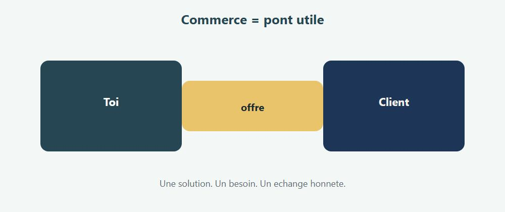
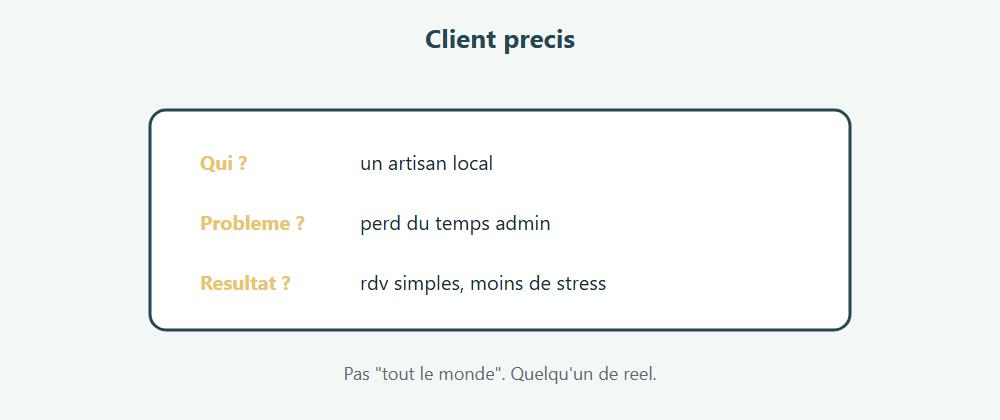
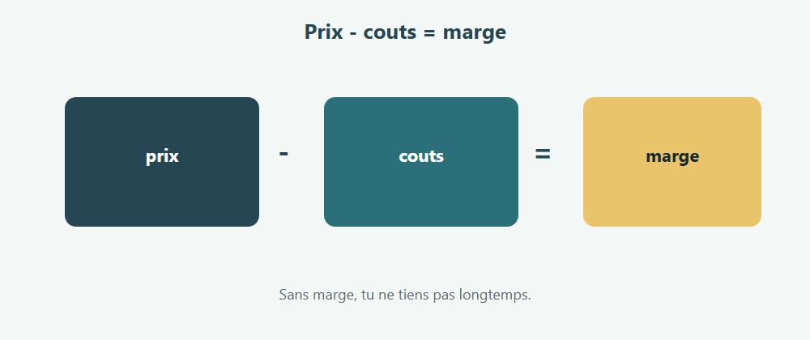
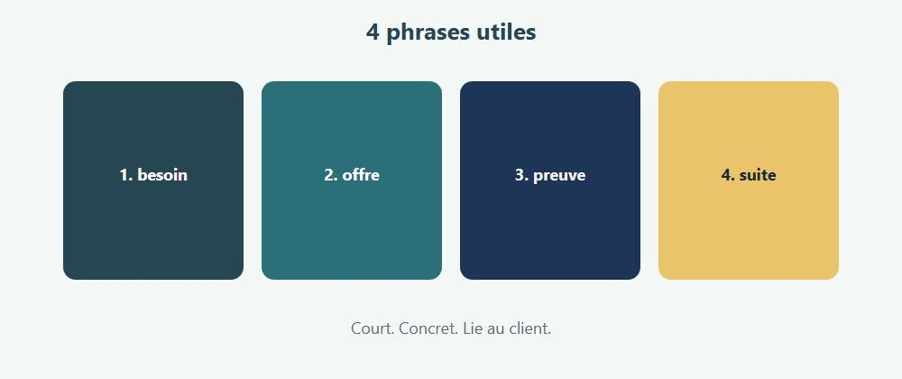
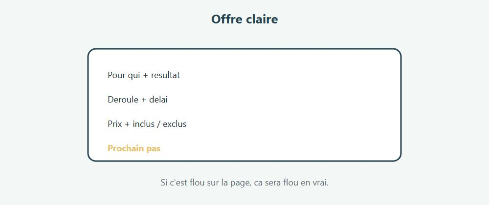

Sommaire
Clique un chapitre ou un sous-chapitre pour y aller.
Chapitre 1 - Salut, c'est quoi le commerce ? Ce que ce n'est pas Image mentale Ce que tu vas savoir faire Comment lire ce livre Petite histoire Chapitre 2 - Le client d'abord Qui est "le client" ? Client vs utilisateur Questions utiles Portrait express Erreur classique A toi Mini defi Chapitre 3 - Besoin, envie, urgence Besoin Envie Job to be done (idee simple) Signaux d'urgence Decouvrir le besoin A toi Mini defi Chapitre 4 - Produit ou service ? Produit Service Souvent, c'est un mix Offre = promesse + preuve + limites Exemple Packager A toi Mini defi Chapitre 5 - Le prix Ce que le prix dit Ancrages simples Prix psychologique (sans magie noire) Dire le prix Tester A toi Mini defi Grille simple Chapitre 6 - Couts et marge Cout Marge Exemple cookie Attention au temps "invisible" Seuil de rentabilite (idee) A toi Mini defi Exemple service (1h) Chapitre 7 - La valeur (pas seulement le prix) Exemples de valeur Prix vs valeur Preuves Differenciation A toi Mini defi Chapitre 8 - Ou vendre ? (les canaux) Exemples Un canal bien > cinq mal Choisir Tunnel simple A toi Mini defi Exemple concret Chapitre 9 - L'argumentaire Structure simple (4 phrases) Exemple Ce qui marche mal Benefice > caracteristique A toi Mini defi Chapitre 10 - Les objections Objections classiques Methode Exemples Ce qu'il ne faut pas faire A toi Mini defi Chapitre 11 - La relation client Avant Pendant Apres Confiance SAV simple A toi Mini defi Moment de verite Chapitre 12 - Faire revenir (fidelisation) Gestes simples Programme sans usine a gaz Communaute A toi Mini defi Chapitre 13 - Mini-projet : ton offre en une page Contenu obligatoire Critères Version "test" En vrai Mini defi Modele de page (copie) Chapitre 14 - Ce qu'il faut retenir En une minute Habitudes Suite Carte mentale Chapitre 15 - Le devis simple Contenu minimum Ton Exemple de blocs Relance A toi Mini defi Chapitre 16 - Un peu de digital (sans panique) Minimum utile Pieges Contenu qui aide Tunnel ultra simple A toi Mini defi Chapitre 17 - Atelier : ecouter pour de vrai Exercice 1 Exercice 2 Exercice 3 Check Phrase piege Chapitre 18 - Atelier : solidifier l'offre Passoire Test "taxi" Prix et marge Livrable atelier Test ami dur Chapitre 19 - Atelier : pitch de 60 secondes Structure Consignes Entrainement Variante objection Check Version ecrite Quiz final - Teste-toi ! Reponses Score Bravo. Tu sais Mission Suite possible
Chapitre 1
Chapitre 1 - Salut, c'est quoi le commerce ?

Commerce = creer de la valeur pour quelqu'un, et en vivre. Le commerce, c'est simple a dire :
tu proposes quelque chose d'utile a quelqu'un,
cette personne accepte de payer,
et toi tu peux continuer.
Produit, service, digital, boutique, artisanat :
meme coeur.
Ce que ce n'est pas
Ce n'est pas "forcer quelqu'un".
Ce n'est pas "mentir pour vendre".
Ce n'est pas seulement "etre beau parleur".
Un bon commerce dure parce que le client revient.
Ou recommande.
Image mentale
Tu as une solution.
Quelqu'un a un probleme (ou un desir).
Le commerce, c'est le pont entre les deux.
Ce que tu vas savoir faire
Voir le monde cote client
Distinguer besoin et envie
Construire une offre claire
Comprendre prix, couts, marge
Choisir un canal
Argumenter sans blabla
Gerer une objection
Ecrire un devis simple
Penser un peu digital
1. Lis un chapitre
2. Prends un exemple perso (vrai ou invente)
3. Ecris 5 lignes
4. Passe au suivant
Ici, peu de code.
Beaucoup d'exemples concrets.
Allez. On commence par le client.
Petite histoire
Lea repare des velos le week-end.
Au debut, elle "aide les potes".
Puis les potes parlent a d'autres.
Elle fixe un prix, un delai, une facon de prendre rendez-vous.
La, ce n'est plus seulement un service rendu.
C'est un commerce qui demarre.
Toi aussi, tu peux commencer petit.
Petit n'est pas ridicule. Petit est testable.
Chapitre 2
Chapitre 2 - Le client d'abord

Sans client, pas de commerce. On commence par lui. Sans client, tu as un hobby.
Avec un client, tu as un commerce.
Qui est "le client" ?
Pas "tout le monde".
"Tout le monde" = personne en particulier.
Mieux :
un parent presse
un artisan qui perd du temps sur l'admin
une asso qui veut plus de dons
un ado qui cherche un cadeau a 20 euros
Plus c'est precis, plus tu peux aider.
Client vs utilisateur
Parfois ce n'est pas la meme personne.
Exemple : un jeu pour enfants.
utilisateur = l'enfant
client = le parent qui paie
Tu dois parler aux deux, mais tu vends a celui qui sort la carte.
Questions utiles
1. Qui souffre / desire quoi ?
2. Qu'est-ce qu'il a deja essaye ?
3. Qu'est-ce qui l'empeche d'agir ?
4. Combien ca lui coute de ne rien changer ?
Portrait express
Ecris 8 lignes :
prenom fictif
age approximatif
situation
probleme
ce qu'il veut vraiment
budget possible
ou il cherche des infos
ce qui le ferait dire oui
Erreur classique
Tu tombes amoureux de ton idee.
Le client, lui, s'en fiche de ton idee.
Il veut son resultat.
A toi
Choisis un commerce invente (ex : vente de cookies, reparation velo, aide devoirs).
Ecris un portrait client en 8 lignes.
Mini defi
Demande a 2 personnes reelles : "Si tu pouvais payer pour gagner 1 heure par semaine, ce serait pour quoi ?"
Note les reponses.
Chapitre 3
Chapitre 3 - Besoin, envie, urgence
Tout le monde ne veut pas la meme chose.
Et tout le monde n'a pas la meme urgence.
Besoin
"J'ai besoin que mon velo marche demain pour aller au travail."
Envie
"J'aimerais un velo plus joli."
Les deux sont valides.
Mais l'urgence et le budget changent.
Job to be done (idee simple)
Les gens "embauchent" un produit pour faire un travail.
Pas pour admirer ta brochure.
Exemple :
ils n'achètent pas une perceuse
ils achètent un trou dans le mur
en vrai : une etagere posee
Signaux d'urgence
delai serre
douleur forte (temps, argent, stress)
consequence claire si on attend
Plus l'urgence est haute, plus la decision est rapide.
(attention : pas d'arnaque a l'urgence fictive)
Decouvrir le besoin
Pose des questions ouvertes :
"Qu'est-ce qui t'embete le plus en ce moment ?"
"Si c'etait resolu, a quoi tu le verrais ?"
"Tu as deja essaye quoi ?"
Ecoute plus que tu ne parles.
A toi
Pour ton client du chapitre 2 :
1. besoin principal
2. envie secondaire
3. niveau d'urgence (1 a 5)
Mini defi
Transforme une envie vague ("je veux un site") en besoin clair
("je veux que des clients me trouvent et prennent rendez-vous sans m'appeler 10 fois").
Chapitre 4
Chapitre 4 - Produit ou service ?
Produit
Quelque chose qu'on peut toucher / telecharger / livrer.
Ex : un gateau, un t-shirt, un ebook.
Service
Du temps, une competence, une presence.
Ex : coiffure, conseil, reparation, formation.
Souvent, c'est un mix
Tu vends un site (livrable) + de la maintenance (service).
Ou un atelier + un support PDF.
Offre = promesse + preuve + limites
Une offre claire dit :
1. pour qui
2. quel resultat
3. comment ca se passe
4. en combien de temps
5. a quel prix
6. ce qui n'est PAS inclus
Les limites protegent.
Elles evitent les malentendus.
Exemple
"Je cree une page vitrine simple pour artisans :
1 page claire
formulaire de contact
livraison en 10 jours
hors photos pro et redaction longue
450 euros"
Packager
Parfois 3 niveaux aident :
Essentiel
Confort
Complet
Pas pour pousser au luxe a tout prix.
Pour laisser le client choisir son niveau.
A toi
Ecris ton offre en 6 lignes (les 6 points ci-dessus).
Mini defi
Ajoute une phrase "ce n'est pas pour..." (ex : "pas pour les entreprises de 200 personnes").
Chapitre 5
Chapitre 5 - Le prix
Le prix n'est pas un tabou.
C'est une information.
Ce que le prix dit
trop bas : "est-ce serieux ?"
trop haut sans preuve : "pourquoi je paierais ca ?"
juste : "ok, ca colle a la valeur"
Ancrages simples
Les gens comparent.
Si tu ne donnes aucun repere, ils inventent le leur.
Tu peux :
montrer 3 formules
comparer au cout de ne rien faire
expliquer ce qui est inclus
Prix psychologique (sans magie noire)
19,90 existe.
Mais la confiance bat le gadget.
Un prix rond et assume marche tres bien si l'offre est claire.
Dire le prix
Enonce-le calmement.
Puis silence.
Laisse l'autre reagir.
Si tu t'excuses en disant le prix, tu affaiblis l'offre.
Tester
Tu peux ajuster.
Note ce que les gens disent :
"trop cher" (par rapport a quoi ?)
"ok"
"je reflechis" (souvent : pas convaincu ou pas le bon moment)
A toi
Choisis un prix pour ton offre.
Ecris une phrase pour l'annoncer sans t'excuser.
Mini defi
Calcule le prix d'une heure de ton temps "au feeling".
Puis on raffine au chapitre suivant avec les vrais couts.
Grille simple
Pour une meme famille d'offres :
Essentiel : moins cher, perimetre serre
Standard : le coeur de ton travail
Plus : options claires (urgence, deplacement, extras)
Le client choisit.
Tu evites le sur-mesure flou a chaque fois.
Chapitre 6
Chapitre 6 - Couts et marge

Prix - couts = marge. Sinon tu travailles a perte. Vendre cher ne suffit pas.
Il faut savoir ce qui reste.
Cout
Tout ce que tu depenses pour produire / livrer :
matieres
outils
deplacements
pubs
frais de plateforme
ton temps (oui)
Marge
Prix de vente - couts = margeSi la marge est nulle ou negative, tu financais le client.
Rarement un plan durable.
Exemple cookie
ingredients : 0,40
emballage : 0,10
part de four / elec : 0,15
temps (disons) : 0,80
total cout : 1,45
prix vente : 2,50
marge : 1,05
Attention au temps "invisible"
Messages, relances, SAV, trajets.
Si tu oublies ca, tu te sous-paies.
Seuil de rentabilite (idee)
Combien dois-tu vendre pour couvrir tes frais fixes du mois ?
Loyer, abonnements, assurance...
Meme en gros, ca evite les illusions.
A toi
Pour ton offre, liste 5 couts.
Estime la marge.
Mini defi
Augmente un cout que tu avais oublie (temps de discussion client).
Recalcule. Qu'est-ce que ca change ?
Exemple service (1h)
deplacement : 4 euros
outils / usure : 1 euro
plateforme / pub au prorata : 2 euros
ton heure "cible" : 25 euros
total a couvrir : 32 euros
Si tu factures 30, tu es deja juste.
Si tu factures 40, tu respires un peu.
Les chiffres exacts dependent de toi. L'idee compte.
Chapitre 7
Chapitre 7 - La valeur (pas seulement le prix)
La valeur, c'est ce que ca change pour le client.
Exemples de valeur
gagner du temps
eviter une galere
faire plus beau / plus pro
se sentir rassure
obtenir un resultat mesurable
Prix vs valeur
Un devis a 300 euros peut etre "bon marche" s'il evite 2 jours de stress.
Un truc a 20 euros peut etre "cher" s'il ne sert a rien.
Preuves
La valeur se croit mieux avec des preuves :
avant / apres
temoignage court
demo
chiffres simples ("3 clients en plus / semaine")
Sans mentir. Sans gonfler.
Differenciation
Pourquoi toi, et pas un autre ?
plus rapide
plus local
plus pedagogue
plus specialise
plus sympa a suivre
Une seule force claire vaut mieux que 12 adjectifs vides.
A toi
Complete :
"Avec mon offre, le client gagne ___ / evite ___ ."
Mini defi
Ecris un mini temoignage fictif realiste (3 lignes) comme s'il venait d'un client content.
Puis note : comment obtenir un vrai plus tard ?
Chapitre 8
Chapitre 8 - Ou vendre ? (les canaux)
Un canal = un chemin entre toi et le client.
Exemples
bouche a oreille
Instagram / LinkedIn
marche local
boutique
site + formulaire
marketplace
partenariat (coiffeur, salle, ecole...)
Un canal bien > cinq mal
Mieux vaut maitriser un chemin.
Que saupoudrer partout et s'epuiser.
Choisir
Pose-toi :
1. Ou mon client cherche deja ?
2. Est-ce que je peux y etre regulierement ?
3. Combien ca me coute (temps / argent) ?
Tunnel simple
1. Attirer l'attention
2. Expliquer l'offre
3. Proposer un prochain pas clair (message, devis, achat)
Si le prochain pas est flou, les gens partent.
A toi
Choisis un canal principal pour ton offre.
Ecris pourquoi.
Mini defi
Ecris le "prochain pas" en une phrase
(ex : "Envoie-moi 3 photos et ton delai, je te reponds sous 24h").
Exemple concret
Tu vends des cookies maison.
Canal principal : marche du samedi + Instagram pour rappeler le stand.
Pas besoin de TikTok + site + 3 marketplaces le premier mois.
D'abord : etre la ou les gens achetent deja.
Chapitre 9
Chapitre 9 - L'argumentaire

Un bon argument parle au besoin, pas a ton ego. Argumenter, ce n'est pas reciter une brochure.
C'est relier ton offre au besoin de la personne.
Structure simple (4 phrases)
1. Je comprends ton probleme
2. Voici ce que je propose
3. Voici le resultat / la preuve
4. Voici le prochain pas
Exemple
"Tu perds du temps a repondre aux memes questions sur WhatsApp.
Je te fais une page claire avec FAQ + formulaire.
Tes clients trouvent l'info, toi tu recois des demandes rangees.
Si tu veux, on regarde ca 15 minutes demain."
Ce qui marche mal
jargon
20 arguments d'un coup
denigrer les concurrents
parler de toi pendant 10 minutes
Benefice > caracteristique
Caracteristique : "papier 300g"
Benefice : "ca fait plus cadeau, ca s'abime moins"
Traduis toujours.
A toi
Ecris ton argumentaire en 4 phrases.
Mini defi
Enleve 3 adjectifs inutiles ("innovant", "unique", "premium") et remplace par du concret.
Chapitre 10
Chapitre 10 - Les objections
Une objection, ce n'est pas forcément un non.
Souvent c'est : "j'ai besoin d'etre rassure".
Objections classiques
"C'est trop cher"
"Je vais reflechir"
"J'ai pas le temps"
"Je dois demander a ..."
"Je peux le faire moi-meme"
Methode
1. Accueille ("ok, je vois")
2. Clarifie ("trop cher par rapport a quoi ?")
3. Reponds avec un fait / une option
4. Propose un prochain pas plus petit
Exemples
Trop cher
"Par rapport a quel budget tu te situais ?
On a aussi une formule plus courte a X."
Je vais reflechir
"Bien sur. Qu'est-ce qui te fait hesiter le plus : le prix, le delai, ou le resultat ?"
Je peux le faire moi-meme
"Oui. La question c'est surtout le temps et l'energie. Tu preferes le faire ce mois-ci ou deleguer ?"
Ce qu'il ne faut pas faire
contredire sèchement
insister 12 fois
brader le prix sans raison (sinon tout le monde attendra la brader)
A toi
Ecris une reponse a "c'est trop cher" pour ton offre.
Mini defi
Joue l'objection "je reflechis" avec un ami. Note ce qui sonne faux.
Chapitre 11
Chapitre 11 - La relation client
La vente ne s'arrete pas au "oui".
Elle continue dans la facon dont tu traites les gens.
Avant
repondre vite (meme pour dire "je te reviens demain")
etre clair sur les delais
ne pas promettre l'impossible
Pendant
tenir ce qui est dit
prevenir si ca derape
demander des validations intermediaires si besoin
Apres
verifier que c'est bon
demander un retour
proposer la suite seulement si utile
Confiance
La confiance se construit avec des petites preuves repetees.
Pas avec un grand discours une fois.
SAV simple
Un client mecontent bien traite peut rester.
Un client ignore devient une mauvaise histoire racontee a 10 personnes.
A toi
Ecris ta regle perso : "Je reponds sous ___ ."
Mini defi
Imagine un retard de 2 jours. Ecris le message honnete que tu enverrais.
Moment de verite
Le client recoit enfin le truc.
Il est content ? Demande-lui ce qui a ete top.
Il est tiède ? Demande ce qui manque.
Ces retours valent plus qu'un like.
Chapitre 12
Chapitre 12 - Faire revenir (fidelisation)
Un nouveau client coute souvent plus cher a obtenir qu'un client qui revient.
Donc : soigne ceux qui sont deja la.
Gestes simples
dire merci
se souvenir d'un detail
offrir un petit avantage coherent (pas une brader permanente)
prevenir d'une nouveaute utile
demander : "tu recommanderais ?"
Programme sans usine a gaz
Idee :
"Apres 5 achats, un produit offert"
ou
"Parraine un ami : vous gagnez tous les deux X"
Simple a expliquer. Simple a tenir.
Communaute
Parfois les gens restent pour l'ambiance autant que pour le produit.
Ateliers, messages, conseils sinceres.
A toi
Choisis une action de fidelisation pour ton offre.
Mini defi
Ecris un message de "merci + suite possible" en 4 lignes max.
Chapitre 13
Chapitre 13 - Mini-projet : ton offre en une page

Mini projet : une offre claire, testable. Tu vas construire une mini fiche offre.
Pas un business plan de 40 pages. Une page claire.
Contenu obligatoire
1. Nom de l'offre
2. Pour qui (portrait)
3. Probleme / besoin
4. Promesse de resultat
5. Deroule (etapes)
6. Prix + ce qui est inclus / exclus
7. Canal principal
8. Prochain pas
9. Une objection + ta reponse
10. Marge estimee (meme grossiere)
Critères
lisible en 2 minutes
concret
honnete
testable cette semaine (meme sur 1 personne)
Version "test"
Propose l'offre a quelqu'un de réel.
Note :
ce qu'il a compris
ce qui a freine
ce qu'il paierait
En vrai
Si personne ne comprend, ce n'est pas "les gens sont betes".
C'est l'offre qui est encore floue.
Mini defi
Imprime ta fiche. Barre 20% du texte. Est-elle encore claire ?
Modele de page (copie)
Offre : ...
Pour : ...
Probleme : ...
Resultat : ...
Etapes : 1) ... 2) ... 3) ...
Prix : ...
Inclus : ...
Exclus : ...
Canal : ...
Prochain pas : ...
Objection frequente : ...
Ma reponse : ...
Marge approx : ...Chapitre 14
Chapitre 14 - Ce qu'il faut retenir
En une minute
Client precis > "tout le monde"
Besoin + urgence
Offre = promesse + limites
Prix assume
Marge = survie
Valeur = changement pour le client
Un canal bien tenu
Argument = lien au besoin
Objection = clarification
Relation + fidelisation
Habitudes
1. Ecouter avant de pitcher
2. Ecrire clair
3. Compter ses couts
4. Tenir sa parole
5. Tester petit
Suite
Deux chapitres utiles :
devis
digital (sans devenir "expert marketing" en 10 minutes)
Puis ateliers + quiz.
Carte mentale
Client -> besoin -> offre -> prix/marge -> canal -> argument -> objection -> relation -> fidelisation
Si tu bloques, reviens au client.
Presque toujours.
Chapitre 15
Chapitre 15 - Le devis simple
Un devis, c'est une offre ecrite.
Ca protege les deux cotes.
Contenu minimum
qui tu es / qui est le client
description de la prestation
prix HT / TTC si besoin (selon ton statut)
delai
validite du devis (ex : 15 jours)
conditions courtes (acompte, annulation)
date + signature / accord
Ton
Clair. Calme. Precis.
Pas de roman.
Exemple de blocs
Prestation : page vitrine 1 page
Inclus : structure, textes fournis par le client, mise en ligne
Exclus : photos pro, logo, redaction longue
Delai : 10 jours ouvrés apres reception des contenus
Prix : 450 euros
Acompte : 30% a la commandeRelance
Si pas de reponse :
J+3 message court
J+7 dernier check
Puis tu passes a autre chose. Sans rancune theatrale.
A toi
Redige un mini devis pour ton offre (meme fictif).
Mini defi
Ajoute une phrase sur l'annulation (juste pour toi et le client).
Chapitre 16
Chapitre 16 - Un peu de digital (sans panique)
Le digital, c'est un megaphone.
Pas une obligation a etre partout.
Minimum utile
un moyen d'etre trouve (page, profil, fiche Google...)
un moyen de contacter
quelques preuves (photos, avis, exemples)
Pieges
poster tous les jours sans offre claire
acheter de la pub trop tot
promettre des resultats miracles ("100 clients en 7 jours")
Contenu qui aide
Montre le travail.
Explique un probleme courant.
Montre un avant/apres.
Reponds aux vraies questions des clients.
Tunnel ultra simple
1. Post / page
2. Message clair
3. Lien ou bouton "me contacter"
4. Reponse humaine rapide
A toi
Choisis ton minimum digital pour les 30 prochains jours (1 a 3 actions max).
Mini defi
Ecris un post de 5 lignes qui parle du probleme client, pas de toi.
Chapitre 17
Chapitre 17 - Atelier : ecouter pour de vrai
Exercice 1
Interviewe quelqu'un 10 minutes sur un probleme du quotidien.
Tu n'as pas le droit de vendre.
Tu as le droit de poser des questions.
Questions :
C'est quoi le plus penible ?
Depuis quand ?
Tu as essaye quoi ?
Idealement, ca se terminerait comment ?
Exercice 2
Retranscris 10 phrases cles.
Souligne les mots du client (son vocabulaire).
Plus tard, reutilise CES mots dans ton offre.
Exercice 3
Qu'as-tu envie de repondre trop vite ?
Note-le. C'est souvent la ou tu ecoutes mal.
Check
Tu sors avec :
un probleme reformule en 1 phrase
3 citations brutes
1 idee d'offre (meme imparfaite)
Phrase piege
Si tu entends "ouais ouais je vois" toutes les 3 secondes, tu parles trop.
Remets une question.
Le silence de l'autre n'est pas un echec. C'est de la matiere.
Chapitre 18
Chapitre 18 - Atelier : solidifier l'offre
Reprends ta fiche du mini-projet.
Passoire
Pour chaque ligne, demande :
C'est concret ?
C'est testable ?
C'est honnete ?
Un ado comprendrait ?
Si non : reecris.
Test "taxi"
Explique ton offre a quelqu'un en 30 secondes.
S'il ne peut pas la repeter, c'est encore flou.
Prix et marge
Recalcule avec un cout "temps" plus realiste.
Est-ce que tu signerais encore ?
Livrable atelier
Une fiche d'une page + 1 phrase de prochain pas.
Test ami dur
Demande a quelqu'un de jouer le client mefiant.
Il a le droit d'etre penetrant.
Toi, tu n'as pas le droit de te vexer.
Tu notes. Tu ameliores.
Chapitre 19
Chapitre 19 - Atelier : pitch de 60 secondes
Structure
1. Probleme (10s)
2. Offre (15s)
3. Preuve / concret (15s)
4. Prix ou cadre (10s)
5. Prochain pas (10s)
Consignes
pas de jargon
pas de "voila quoi"
une seule idee principale
Entrainement
Filme-toi une fois.
Regarde sans son : est-ce que tu as l'air a l'aise ?
Avec son : est-ce clair ?
Variante objection
Juste apres le pitch, ton partenaire dit "c'est trop cher".
Tu reponds avec la methode du chapitre 10.
Check
3 passages. Le 3e doit etre plus court et plus clair que le 1er.
Version ecrite
Ecris ton pitch sur papier.
Barre la moitie des mots.
Relis a voix haute.
Si ca sonne comme une pub creuse, recommence.
Quiz
Quiz final - Teste-toi !
Q1. Sans client, tu as surtout :
A) Un commerce solide
B) Un hobby / une idee
C) Une marge
Q2. "Tout le monde" comme cible, c'est :
A) Ideal
B) Souvent trop vague
C) Obligatoire
Q3. Un besoin urgent pousse souvent a :
A) Attendre 2 ans
B) Decider plus vite
C) Ignorer le prix toujours
Q4. Une bonne offre contient aussi :
A) Seulement le prix
B) Des limites / exclusions
C) Aucune promesse
Q5. Marge =
A) Prix + couts
B) Prix - couts
C) Couts seuls
Q6. La valeur, c'est surtout :
A) Le changement pour le client
B) La longueur du logo
C) Le nombre de followers
Q7. Mieux vaut :
A) 5 canaux mal tenus
B) 1 canal bien tenu
C) Aucun canal
Q8. Un argumentaire efficace relie :
A) Ton ego au jargon
B) L'offre au besoin
C) Les concurrents a la critique
Q9. Une objection est souvent :
A) La fin absolue
B) Une demande de clarification / reassurance
C) Une injure
Q10. Dire le prix :
A) En s'excusant beaucoup
B) Calmement, puis silence
C) En le cachant toujours
Q11. Un devis sert a :
A) Decoruer
B) Clarifier l'accord par ecrit
C) Remplacer le produit
Q12. Fideliser, c'est surtout :
A) Ignorer les clients actuels
B) Soigner ceux qui sont deja la
C) Baisser les prix chaque jour
Q13. Digital utile, c'est d'abord :
A) Etre partout
B) Etre trouvable + contactable + prouver un peu
C) Acheter de la pub tout de suite
Q14. Benefice =
A) Detail technique seul
B) Ce que ca apporte concrètement
C) Un mot anglais obligatoire
Q15. Prochain pas flou =
A) Plus de ventes
B) Plus de gens qui partent
C) Meilleure marge
Q16. Ecouter avant de vendre :
A) Fait perdre son temps
B) Ameliore l'offre et la confiance
C) Est interdit
Q17. Sous-estimer son temps :
A) Ameliore la marge
B) Fausse les couts
C) Attire les meilleurs clients automatiquement
Q18. Preuve utile :
A) Avant/apres, temoignage, demo simple
B) "C'est innovant" sans exemple
C) Critiquer les autres
Reponses
1 B, 2 B, 3 B, 4 B, 5 B, 6 A, 7 B, 8 B, 9 B, 10 B,
11 B, 12 B, 13 B, 14 B, 15 B, 16 B, 17 B, 18 A
Score
16-18 : nickel
12-15 : bien, relis marge + objections + devis
8-11 : refais client / offre / argumentaire
moins de 8 : refais le mini-projet tranquillement
Final
Bravo.
Bravo. Tu as les bases du commerce. Tu as les bases du commerce.
Pas un MBA. Une boussole.
Tu sais
partir du client
ecrire une offre claire
regarder prix et marge
argumenter sans blabla
repondre a une objection
soigner la relation
poser un devis simple
utiliser un peu le digital sans paniquer
Mission
Cette semaine :
1. Montre ton offre a 3 personnes
2. Note leurs freins
3. Ajuste UNE chose (pas quinze)
4. Propose un vrai prochain pas a quelqu'un
Suite possible
Negociation, compta de base, marketing plus pousse, juridique selon ton pays...
Plus tard.
La, respire.
Tu as un pont entre une solution et quelqu'un qui en a besoin.
C'est deja le coeur du jeu.